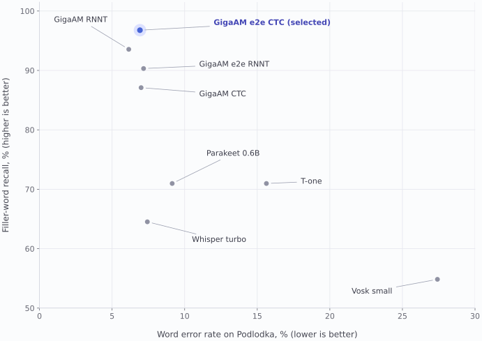

8
recognisers compared
Three Russian speech samples: 20, 300 and 150 clips.
Speech rehearsal application
ITMO thesis project, continued in 2026
An app for practising
presentations.
I started Talk Mate during my bachelor’s thesis at ITMO. In 2026, I continued the speech-model work and revised the mobile interface.
Read the project Model benchmarks ↓

8
Three Russian speech samples: 20, 300 and 150 clips.
96.8%
Podlodka: 30 of 31 reference filler words recovered.
0.027×
Apple M5 CPU. Model loading and other pipeline stages excluded.
77.6%
Current bilingual head, Dusha test, 2,735 clips.
94.1%
Four talks; parameters selected on the same recordings.
Project measurements. Dataset, checkpoint and timing details are given in Models and evaluation.
Talk Mate records a presentation and sends it to a server for speech analysis. The intended users include people who are nervous about presenting. This revision focused on how they start a recording and read the feedback afterwards.
2026 interface revision
Recording and analysis were already implemented. I revised onboarding, recording controls, typography and the order of information on the results screen.
The 2026 interface revision used AI-assisted implementation, visual review and automated iOS checks.
The app sends the recording to the configured server. Saved sessions can be reopened from history, and the results screen has a button to start another recording.
Speak without slides, or attach a PDF and turn the pages during recording.
The summary is followed by a suggested exercise. The measurements and transcript are available below.
The repeat button opens the recorder. Previous attempts remain in the session history.
The three screens explain what the app analyses, how to use slides and what the feedback looks like. Existing users can go straight to login.


English screens from the running iOS prototype. The examples use demonstration data.
Attaching a PDF opens a slide preview in the recorder. Page changes are saved with timestamps, which the server can use when matching the speech to the presentation.
The earlier controls looked inactive during review. I strengthened the start button and added text labels for the recording states.
The control now says “Add presentation”, names the PDF format and explains that the attachment is optional.
The file name, current page and navigation sit together below the timer. A presentation can also be removed before analysis.


The first version showed six measurements before any advice. I moved the summary, suggested exercise and repeat button above the measurements. The comparison shows both versions.
For a quiet recording, the summary reports low volume. It avoids turning that measurement into an assessment of the speaker’s ability.
The quiet-recording example asks the speaker to record a sentence at the same distance from the microphone and listen back.
Pace and filler words stay visible. “All metrics” opens volume, intonation and intelligibility, with an explanation of their limits.
These changes came from interface review. The earlier screenshot is from the Russian build.
The profile shows recent sessions and a pace trend. The progress page has separate charts for pace, filler words, volume, intonation and intelligibility. The charts shown here contain synthetic data.


I kept the microphone character and pink and blue palette. I replaced thin and decorative interface fonts with shared system styles, darkened the results text and adjusted layouts for larger text sizes.
Wordmark / Manrope 650
The wordmark uses Manrope at weight 650. The iOS interface uses the system typeface, with shared styles for headings, body text and captions.
Colour by role
Pink is used on onboarding and recording surfaces. Primary actions are blue. Most text is dark, with violet used for text actions such as “All metrics”.
These colour and type values are taken from the current iOS build.
I referred to two recent studies while revising the feedback. They concern public-speaking practice in different settings and do not evaluate this app.
2025 / Expert perspectives / Preprint
Fourati and colleagues interviewed 16 speaking coaches and ran two workshops with seven experts. Their discussion of feedback that speakers can act on informed the wording of the suggested exercises.
Read the study2026 / VR coaching / Controlled study
Chang and colleagues studied 120 participants practising speeches in VR. I used the coaching between attempts as a reference for the rehearsal flow. The study’s results cannot establish how a self-guided mobile app will perform.
Read the studyThe decision to show one exercise first still needs testing with speakers. These references do not establish that the interface improves speaking performance or reduces anxiety.
The phone captures audio and optional slide changes. The configured Talk Mate server runs recognition, audio measurements and PDF analysis. Speech language and interface language are handled separately.
When page-change timestamps are supplied, they determine which slide was shown. Without them, the server estimates the alignment from words and semantic similarity.
I compared eight recognisers because missed filler words change the feedback the app gives. Word error rate was one criterion; retaining fillers and vocalised pauses also mattered.

GigaAM-v3 e2e CTC recovered 96.8% of reference fillers, compared with 64.5% for Whisper large-v3-turbo. Its filler precision was 85.7%, so some detected fillers were extra.
On 52 SOVA clips containing 55 annotated pauses such as “э-э”, the selected model recovered 49.1%. Whisper recovered 1.8%. Standard GigaAM RNNT had lower Podlodka WER, but recovered none of these pauses.
Podlodka WER fell from 27.4% with Vosk to 6.9%. The selected model’s recorded RTF was 0.0268 on an Apple M5 CPU. Whisper was timed on a GPU, so I do not present a hardware-matched speed comparison.
| Model | WER Podlodka | Filler recall Podlodka | Filler precision Podlodka | WER SOVA | WER FLEURS | Vocalised pauses SOVA subset |
|---|---|---|---|---|---|---|
| GigaAM-v3 e2e CTC (selected) | 6.9% | 96.8% | 85.7% | 12.8% | 4.2% | 49.1% |
| GigaAM-v3 e2e RNNT | 7.2% | 90.3% | 84.9% | 12.0% | 4.1% | 36.4% |
| GigaAM-v3 RNNT | 6.2% | 93.5% | 87.9% | 10.2% | 5.7% | 0.0% |
| GigaAM-v3 CTC | 7.0% | 87.1% | 93.1% | 10.4% | 5.9% | 0.0% |
| Parakeet TDT 0.6B v3 | 9.1% | 71.0% | 91.7% | 15.3% | 5.0% | 3.6% |
| T-one | 15.6% | 71.0% | 91.7% | 10.7% | 12.1% | 0.0% |
| Vosk small | 27.4% | 54.8% | 94.4% | 28.2% | 19.3% | 0.0% |
| Whisper large-v3-turbo | 7.4% | 64.5% | 90.9% | 13.8% | 3.7% | 1.8% |
The other main samples were 300 SOVA RuDevices clips and 150 read sentences from FLEURS. The 52-clip hesitation sample was selected from SOVA and is not a fourth independent dataset. SOVA may overlap with GigaAM’s training domain; Podlodka and FLEURS provide additional checks.
Timing follows a warm-up call and excludes model loading. The ASR evaluation timer also includes transcript normalisation and metric bookkeeping. It is not end-to-end app latency and excludes language probing, emotion inference and OCR.
These are Russian recognition results. English routing uses Parakeet TDT 0.6B v3; the English ASR check currently uses a 32-second synthetic recording, so it is not evidence of accuracy on live English talks.
Download the ASR measurements (CSV) · Chart (SVG) · Chart (PNG)
Emotion classifier
The original checkpoint was trained on acted Russian speech. On the held-out Dusha recordings it reached 16.5% accuracy. I froze the encoder and trained a new head using a learned mixture of its 25 layers, with temporal means and standard deviations.
The earlier Russian-only head reached 78.2%. The current head supports both languages and reaches 77.6% on the same 2,735-clip Russian test. Its macro-F1 is 0.725; negative labels on neutral clips fell from 52.1% with the original checkpoint to 11.7%.
| Test set | Clips | Accuracy | Macro-F1 | Negative label on neutral clips |
|---|---|---|---|---|
| DushaRussian, spontaneous | 2,735 | 77.6% | 0.725 | 11.7% |
| RESDRussian, acted | 280 | 78.2% | 0.783 | 2.6% |
| CREMA-DEnglish, acted | 1,476 | 71.5% | 0.716 | 11.1% |
| RAVDESSEnglish, acted | 520 | 81.9% | 0.800 | 1.7% |
| MELDEnglish, TV dialogue | 2,284 | 48.6% | 0.265 | 7.2% |
The head has seven outputs. Dusha’s test contains four labelled emotion classes. Training combines Dusha, RESD, CREMA-D, RAVDESS and MELD; negative-label thresholds are 0.65 for Russian and 0.55 for English, selected on validation data.
MELD remains weak: 48.6% accuracy and 0.265 macro-F1 on TV dialogue. Always predicting its majority class, neutral, would reach 54.0% accuracy. These results do not establish emotion-recognition quality on users’ presentations.
Speech and slides
The reader combines the PDF text layer with OCR for text in images. It compares words and multilingual-e5-small sentence vectors, while keeping the slide sequence in order.
The score is the share of speech time assigned to the correct slide, averaged with talk-duration weights. The evaluation used four Russian talks: 21.7 minutes, 39 slides and 142 phrases.
The semantic weight and thresholds were selected on these same four talks. There is no held-out talk set, and the speakers mostly follow their slide text. Free paraphrasing still needs evaluation.
Time per slide, whether its text was covered or read aloud, and text-density or small-font warnings. Page-change marks from the app take precedence over estimated timing.
These are project benchmarks, not a measurement of improved speaking or reduced anxiety. Values come from saved evaluation reports; the model code was checked against the processing diagram.
Download benchmark data and source hashes (JSON)The English iOS build is shown below, grouped by task. Longer pages have more than one capture. Select a preview to see the full screen.
These captures use demonstration data. The terms and privacy documents are drafts.


I have not yet run a usability study. I want to ask speakers to record a short talk, explain the suggested change and make another attempt. That would help me revise the wording and decide which measurements need more explanation.
The slide-alignment evaluation also needs more talks delivered without reading the slides. Public release requires confirmed operator details, hosting and data-retention policies.
Contact me